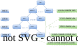

介绍
【小笨手】是一款面向高效工作流的专业级键鼠模拟应用。它采用高度优化的底层架构，在确保毫秒级操作响应的同时，实现了极致的轻量化内存管理，为用户提供流畅且无负担的自动化体验。
1. 核心功能
支持通过自定义工作流编排复杂的键鼠操作序列，实现高度自动化的任务执行，彻底解放双手，告别繁琐的重复性手动操作。
2. 适用场景
游戏辅助与连招映射
能够根据用户的实时输入高频触发预设的模拟指令，精准替代高频或复杂的按键组合，有效降低操作负担并提升响应效率。
自动化办公
可模拟各类键盘快捷键及基础点击操作（注：当前版本暂不支持鼠标光标位移模拟），适用于各类固定流程的快捷触发与日常办公场景的效率提升。
3. 配置介绍

3.1. 项目层
【项目】单纯是为了隔离、区分不同的使用场景和处理【工作】的【触发键】区间不够用的问题
3.2. 工作层和任务层
在操作系统的任意窗口都可以直接敲击【触发键】触发【工作】或【任务】
高性能产品理念：
一：只有处于运行状态时【小笨手】才会监听【任务】的【触发键】
二：连续敲击【任务】的【触发键】会取消尚未执行的【子任务】
3.2.1 预设场景：
为了达成高性能效果，在配置【工作】、【任务】和【子任务】的时候，需要正确划分【工作】和【任务】的边界。
其中：
一：【工作】适用于分钟级以上切换的场景
二：【任务】适用于秒级快速切换的场景
3.3. 子任务层
注意事项：在【子任务】启动后会从【工作】和【任务】监听的【触发键】列表中过滤掉【子任务】的【自动按键】
例如：如果【子任务】中设置了【自动按键】a，如果【任务】的【触发键】中存在 a，【任务】一经触发该【触发键】失效吗，直至【子任务】运行完成 备注：因此如无必要，尽量避免使用【子任务】的【自动按键】作为【触发键】